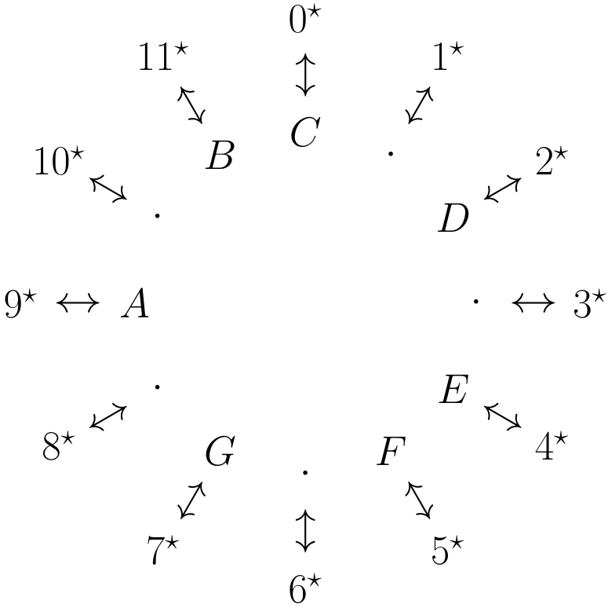

In this course we will take a different approach to musical notes.
To start we'll first go through how we're going to reference notes:
Or around a circle it looks like
Therefore when we want to speak of a D#, we would write 3*. The asterisk denotes that it is referencing the actual note that we hear, and not anything else.
Since this system is cyclic, that is after 11* we go back to 0*, that we never really have to consider a number larger than 11*, since if we were to consider 12* it would just be us back at 0* and 15* would just be us at 3*, so throughout this course we will never consider numbers larger than 11.
In our approach we will generalize a bit on what exactly a note is. In our new method, we will instead think of a note relative to some anchoring note, to make that more clear we will look at an example.
If we consider D, its 2 steps away from C. But if we consider D with respect to B, we would know that this is a 3 steps up from B. This distance is what we will use to characterize our notes.
So let's consider D (2*) and setting our anchor note to be B (11*), we can notice that 2* is 3 steps up from 11*. And therefore we will denote D/2* as the number 3, the note B (11*) is 0 steps away from itself so that would be denoted by 0, we would write F# (6*) as 7, finally A (9*) would be a 10.
Now we have a new way of thinking about notes with respect to some anchor note. This idea will let us incorporate musical analysis into the way we actually play music, and not have them as two separate studies.